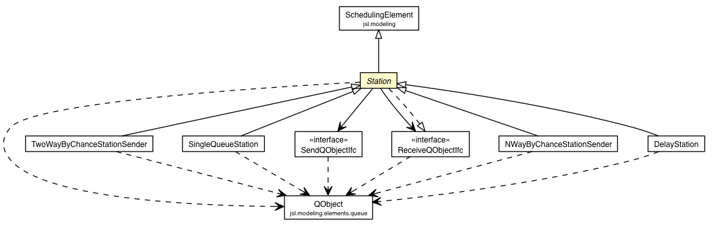

jsl.modeling.elements.station
Class Station

java.lang.Object
 jsl.modeling.ModelElement
jsl.modeling.SchedulingElement
jsl.modeling.elements.station.Station
jsl.modeling.ModelElement
jsl.modeling.SchedulingElement
jsl.modeling.elements.station.Station
- All Implemented Interfaces:
- ReceiveQObjectIfc, ObservableIfc, IdentityIfc
- Direct Known Subclasses:
- DelayStation, NWayByChanceStationSender, SingleQueueStation, TwoWayByChanceStationSender
public abstract class Station
- extends SchedulingElement
- implements ReceiveQObjectIfc
A Station represents a location that can receive QObjects for
processing. Sub-classes of Station must supply an implementation of the
ReceiveQObjectIfc interface.
A Station may or may not have a helper object that implements the
SendQObjectIfc interface. If this helper object is supplied it will
be used to send the processed QObject to its next location for
processing.
A Station may or may not have a helper object that implements the
ReceiveQObjectIfc interface. If this helper object is supplied and
the SendQObjectIfc helper is not supplied, then the object that implements
the ReceiveQObjectIfc will be the next receiver for the QObject
If neither helper object is supplied then a runtime exception will
occur when trying to use the send() method
| Fields inherited from class jsl.modeling.ModelElement |
AFTER_EXPERIMENT, AFTER_REPLICATION, BEFORE_EXPERIMENT, BEFORE_REPLICATION, CONDITIONAL_ACTION_REGISTRATION, DEFAULT_TIMED_EVENT_PRIORITY, INITIALIZED, MONTE_CARLO, myAfterExperimentOption, myAfterReplicationOption, myBeforeExperimentOption, myBeforeReplicationOption, myInitializationOption, myLengthOfWarmUp, myModelElements, myMonteCarloOption, myObservableComponent, myReplicationEndedOption, myTimedUpdateActionListener, myTimedUpdateEvent, myTimedUpdateInterval, myTimedUpdateOption, myTimedUpdatePriority, myWarmUpActionListener, myWarmUpEvent, myWarmUpIndicator, myWarmUpOption, myWarmUpPriority, NONE, REMOVED_FROM_MODEL, REPLICATION_ENDED, TIMED_UPDATE, UPDATE, WARMUP |
|
Method Summary |
ReceiveQObjectIfc |
getNextReceiver()
A Station may or may not have a helper object that implements the
ReceiveQObjectIfc interface. |
SendQObjectIfc |
getSender()
A Station may or may not have a helper object that implements the
SendQObjectIfc interface. |
protected void |
send(QObject qObj)
A Station may or may not have a helper object that implements the
SendQObjectIfc interface. |
void |
setNextReceiver(ReceiveQObjectIfc receiver)
A Station may or may not have a helper object that implements the
ReceiveQObjectIfc interface. |
void |
setSender(SendQObjectIfc sender)
A Station may or may not have a helper object that implements the
SendQObjectIfc interface. |
| Methods inherited from class jsl.modeling.SchedulingElement |
cancelEvent, getHandleEventListener, handleEvent, rescheduleEvent, rescheduleEvent, rescheduleEvent, rescheduleEvent, scheduleEvent, scheduleEvent, scheduleEvent, scheduleEvent, scheduleEvent, scheduleEvent, scheduleEvent, scheduleEvent, scheduleEvent, scheduleEvent, scheduleEvent, scheduleEvent, scheduleEvent, scheduleEvent, scheduleEvent, scheduleEvent, scheduleEvent, scheduleEvent, scheduleEvent, scheduleEvent, scheduleEvent, scheduleEvent, scheduleEvent, scheduleEvent, scheduleEvent, scheduleEvent |
| Methods inherited from class jsl.modeling.ModelElement |
addObserver, addObserverToModelElements, afterExperiment_, afterExperiment, afterReplication_, afterReplication, beforeExperiment_, beforeExperiment, beforeReplication_, beforeReplication, cancelTimedUpdateEvent, cancelWarmUpEvent, changeParentModelElement, checkForAfterExperiment, checkForAfterReplication, checkForBeforeExperiment, checkForBeforeReplication, checkForConditionalActionRegistration, checkForInitialize, checkForMonteCarlo, checkForRemoveFromModel, checkForReplicationEnded, checkForTimedUpdate, checkForUpdate, checkForWarmUp, checkObserverState, clearModelElementObservers, constructorCalls_, contains, countObservers, createEntity, createEntity, createQObject, deleteObserver, deleteObserverFromModelElements, deleteObservers, getAddedWhileReplicationWasRunningFlag, getAfterExperimentOption, getAfterReplicationOption, getAllCounters, getAllElementsNeedingRemoval, getAllRandomElements, getAllResponseVariables, getAllVariables, getBeforeExperimentOption, getBeforeReplicationOption, getChildModelElementIterator, getCurrentReplicationNumber, getDefaultEntityType, getDefaultFIFOQueueDiscipline, getDefaultLIFOQueueDiscipline, getDefaultRandomQueueDiscipline, getDefaultRankedQueueDiscipline, getExecutive, getExperiment, getId, getInitializationOption, getInitializationOrderAsString, getLengthOfWarmUp, getModel, getModelElementsAsString, getModelElementsAsString, getModelElementsAsString, getMonteCarloOption, getName, getNumberOfModelElements, getObserverState, getParentModelElement, getPreviousObserverState, getRemoveFromModelPriorToRepFlag, getReplicationEndedOption, getSimulation, getSpatialModel, getStringLabel, getThisElementsCounters, getThisElementsRandomVariables, getThisElementsResponseVariables, getThisElementsVariables, getTime, getTimedUpdateInterval, getTimedUpdateOption, getUpdateNotificationFlag, getVariable, getWarmUpEventTime, getWarmUpOption, indent, initialize_, initialize, isTimedUpdateEventScheduled, isWarmedUp, isWarmUpEventScheduled, montecarlo_, montecarlo, notifyAfterExperimentObservers, notifyAfterReplicationObservers, notifyBeforeExperimentObservers, notifyBeforeReplicationObservers, notifyConditionalActionRegistrationObservers, notifyInitializationObservers, notifyMonteCarloObservers, notifyObservers, notifyObservers, notifyRemovingFromModelObservers, notifyReplicationEndedObservers, notifyTimedUpdateObservers, notifyUpdateObservers, notifyWarmUpObservers, registerConditionalActions_, registerConditionalActions, removedFromModel, removeFromModel, replicationEnded_, replicationEnded, setAddedWhileReplicationWasRunningFlag, setAfterExperimentOption, setAfterExperimentOptionForModelElements, setAfterReplicationOption, setAfterReplicationOptionForModelElements, setBeforeExperimentOption, setBeforeExperimentOptionForModelElements, setBeforeReplicationOption, setBeforeReplicationOptionForModelElements, setInitializationOption, setInitializationOptionForModelElements, setLengthOfWarmUp, setModel, setMonteCarloOption, setMonteCarloOptionForModelElements, setName, setObserverState, setParentModelElement, setRemoveFromModelPriorToRepFlag, setReplicationEndedOption, setReplicationEndedOptionForModelElements, setSpatialModel, setStringLabel, setTimedUpdateInterval, setTimedUpdateOption, setTimedUpdateOptionForModelElements, setUpdateNotificationFlag, setWarmUpOption, setWarmUpOptionForModelElements, stopExecutive, stopExecutive, timedUpdate_, timedUpdate, toString, update, useControls, warmUp_, warmUp |
mySender
private SendQObjectIfc mySender
- Can be supplied in order to provide logic
to send the QObject to its next receiver
myNextReceiver
private ReceiveQObjectIfc myNextReceiver
- Can be used to directly tell the receiver to receive the departing
QObject
Station
public Station(ModelElement parent)
Station
public Station(ModelElement parent,
String name)
Station
public Station(ModelElement parent,
SendQObjectIfc sender,
String name)
- Parameters:
parent - sender - can be nullname -
getSender
public final SendQObjectIfc getSender()
- A Station may or may not have a helper object that implements the
SendQObjectIfc interface. If this helper object is supplied it will
be used to send the processed QObject to its next location for
processing.
- Returns:
setSender
public final void setSender(SendQObjectIfc sender)
- A Station may or may not have a helper object that implements the
SendQObjectIfc interface. If this helper object is supplied it will
be used to send the processed QObject to its next location for
processing.
- Parameters:
sender -
getNextReceiver
public final ReceiveQObjectIfc getNextReceiver()
- A Station may or may not have a helper object that implements the
ReceiveQObjectIfc interface. If this helper object is supplied and
the SendQObjectIfc helper is not supplied, then the object that implements
the ReceiveQObjectIfc will be the next receiver for the QObject when using
default send() method.
- Returns:
setNextReceiver
public final void setNextReceiver(ReceiveQObjectIfc receiver)
- A Station may or may not have a helper object that implements the
ReceiveQObjectIfc interface. If this helper object is supplied and
the SendQObjectIfc helper is not supplied, then the object that implements
the ReceiveQObjectIfc will be the next receiver for the QObject when using
default send() method.
- Parameters:
receiver -
send
protected void send(QObject qObj)
- A Station may or may not have a helper object that implements the
SendQObjectIfc interface. If this helper object is supplied it will
be used to send the processed QObject to its next location for
processing.
A Station may or may not have a helper object that implements the
ReceiveQObjectIfc interface. If this helper object is supplied and
the SendQObjectIfc helper is not supplied, then the object that implements
the ReceiveQObjectIfc will be the next receiver for the QObject
If neither helper object is supplied then a runtime exception will
occur when trying to use the send() method
- Parameters:
qObj -
Copyright 2012 Manuel D. Rossetti. All Rights Reserved.